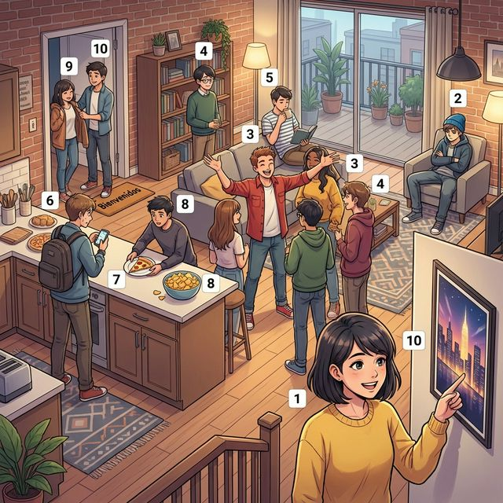

At the A2 level, we dive deeper into the nuances of human character. While A1 focused on basic appearance, A2 explores the "inner self"—personality, moods, and social behaviors. Understanding these nuances is key to meaningful relationship-building in the Spanish-speaking world.
한국어 번역:
A2 단계에서는 인간 성격의 미묘한 차이를 더 깊이 파고듭니다. A1이 기본적인 외모에 집중했다면, A2는 성격, 기분, 그리고 사회적 행동과 같은 '내면의 자아'를 탐구합니다. 이러한 뉘앙스를 이해하는 것은 스페인어권 세계에서 의미 있는 관계를 맺는 핵심입니다.
학습 목표 (Learning Objectives):
- Master 10+ advanced personality adjectives and abstract traits.
- Use Reflexive Verbs to describe daily routines and emotional states (Me levanto, Me siento).
- Compare and contrast personalities using refined structures.
- Analyze the impact of digital identity and social media in modern Spanish life.
한국어 번역:
'아마블레(Amable, 친절한)'라는 단어는 라틴어 'Amabilis'에서 유래되었으며, '사랑받을 가치가 있는'이라는 뜻입니다. 스페인 문화에서 친절하다는 것은 단순히 예의 바른 태도 그 이상입니다. 이는 공동체와 가족 유대('el familismo')를 촉진하는 핵심적인 사회적 가치입니다.
A nivel A2, exploramos adjetivos más precisos para describir la personality y estados emocionales.
한국어 번역:
A2 단계에서는 성격과 감정 상태를 묘사하는 보다 정밀한 형용사들을 탐구합니다.

A2 level vocabulary focuses on abstract traits. Many of these are cognates, making them easy to pick up but requiring precision in usage.
| # | Spanish | English Bridge | Korean Tip |
|---|---|---|---|
| 1 | optimista | Optimistic ✅ (Perfect Cognate) | '낙천적인' 뜻으로, 항상 긍정적인 면을 보는 사람입니다. |
| 2 | pesimista | Pessimistic ✅ (Perfect Cognate) | '비관적인' 뜻입니다. |
| 3 | abierto/a | Open | '열린' 혹은 '사교적인' 뜻입니다. |
| 4 | reservado/a | Reserved ✅ (Perfect Cognate) | '내성적인' 혹은 '말수가 적은' 뜻입니다. |
| 5 | tranquilo/a | Tranquil ✅ (Perfect Cognate) | '차분한' 혹은 '조용한' 뜻입니다. (Tranquilizer와 같은 어원) |
| 6 | nervioso/a | Nervous ✅ (Perfect Cognate) | '불안한' 혹은 '긴장한' 상태를 뜻합니다. |
| 7 | generoso/a | Generous ✅ (Perfect Cognate) | '관대한' 혹은 '손이 큰' 뜻입니다. |
| 8 | egoísta | Egoistic ✅ (Perfect Cognate) | '이기적인' 뜻입니다. |
| 9 | amable | Amicable (friendly) | '친절한' 뜻으로, 영어의 amiable과도 연결됩니다. |
| 10 | tolerante | Tolerant ✅ (Perfect Cognate) | '관용적인' 뜻입니다. |
✅ 표시가 있는 단어는 영어 단어와 어원이 매우 유사하여 기억하기 쉽습니다.
Expressing personality at the A2 level involves more complex sentence structures and frequency adverbs.
실전 예문 (Practical Examples):
- ES: Mi padre es muy generoso, siempre ayuda a los demás. (제 아버지는 매우 관대하셔서 항상 다른 사람들을 도와주십니다.)
- EN: My father is very generous; he always helps others.
- ES: ¿Eres una persona abierta o reservada? (너는 외향적인 사람이니 아니면 내향적인 사람이니?)
- EN: Are you an open or a reserved person?
At the A2 level, we introduce reflexive verbs to describe actions that "reflect" back on the subject. These are often used for daily routines and emotional changes.
| Subject | Pronoun | Example (levantarse - to get up) |
|---|---|---|
| yo | me | Me levanto |
| tú | te | Te levantas |
| él / ella / usted | se | Se levanta |
| nosotros / nosotras | nos | Nos levantamos |
| vosotros / vosotras | os | Os levantáis |
| ellos / ellas / ustedes | se | Se levantan |
Verbs like ponerse (to become/get) are crucial for describing changes in personality or mood:
- Me pongo alegre: I become happy.
- Te pones nervioso: You get nervous.
Modern identity in Spain is deeply intertwined with redes sociales (social media). Young Spaniards are among the most active "instagrammers" and "tiktokers" in Europe. This has created a new vocabulary of personality.
Digital identity is seen as a way to express "quiénes somos" (who we are) to a global audience. However, Spanish culture still places high value on "el cara a cara" (face-to-face interaction). While someone might seem abierto and optimista on their profile, their true personality is revealed during long sessions of "sobremesa"—the traditional Spanish talk after a meal. This balance between the virtual self and the authentic social self is a key topic for advanced A2 learners.
한국어 번역:
디지털 정체성은 전 세계 청중에게 '우리가 누구인지(quiénes somos)'를 표현하는 수단으로 여겨집니다. 하지만 스페인 문화는 여전히 '얼굴을 맞대고(el cara a cara)' 소통하는 것에 높은 가치를 둡니다. 누군가의 프로필이 '아비에르토(abierto)'하고 '옵티미스타(optimista)'해 보일지라도, 그들의 진정한 성격은 식사 후 긴 대화 시간인 '소브레메사(sobremesa)'에서 드러납니다. 가상 세계의 자아와 실제 사회적 자아 사이의 균형은 A2 학습자들에게 중요한 주제입니다.
Match the A2 personality trait with its opposite.
| Trato (Trait) | Opuesto (Opposite) |
|---|---|
| 1. Optimista | a. Reservado |
| 2. Abierto | b. Egoísta |
| 3. Generoso | c. Pesimista |
| 4. Tranquilo | d. Antipático (unfriendly) |
| 5. Amable | e. Nervioso |
Fill in the correct reflexive pronoun (me, te, se, nos, os, se).
다음 문장을 스페인어로 번역하세요.
Elena es una estudiante de arquitectura en Madrid. En su perfil de Instagram, se describe como una persona optimista y abierta. Le encanta viajar y conocer gente nueva. Sin embargo, en clase, es un poco reservada y tranquila. Sus amigos dicen que es 매우 generosa porque siempre comparte sus apuntes. Elena cree que es importante ser tolerante con todas las culturas.
한국어 번역:
엘레나는 마드리드에서 건축을 공부하는 학생입니다. 그녀의 인스타그램 프로필에서 그녀는 자신을 낙천적이고 외향적인 사람으로 설명합니다. 그녀는 여행하고 새로운 사람들을 만나는 것을 정말 좋아합니다. 하지만 수업 중에는 조금 내성적이고 조용한 편입니다. 그녀의 친구들은 그녀가 항상 자신의 노트를 공유하기 때문에 매우 관대하다고 말합니다. 엘레나는 모든 문화에 대해 관용적인 태도를 갖는 것이 중요하다고 믿습니다.
Questions:
1. ¿Cómo se describe Elena en Instagram? (엘레나는 인스타그램에서 자신을 어떻게 설명합니까?)
2. ¿Por qué es Elena generosa, según sus amigos? (친구들에 따르면 엘레나가 왜 관대한가요?)
Two students are doing a personality test for a sociology project.
| Spanish (ES) | Korean (KO) |
|---|---|
| Luis: Hola Marta, ¿tienes un momento? | Luis: 안녕 Marta, 시간 좀 있니? |
| Marta: Sí, claro. ¿Qué pasa? | Marta: 응, 물론이지. 무슨 일이야? |
| Luis: Estoy haciendo un test sobre la personalidad. ¿Cómo te defines? | Luis: 성격 테스트를 하나 하고 있어. 너는 너 자신을 어떻게 정의하니? |
| Marta: Pues, me considero una persona tranquila y amable. | Marta: 음, 나는 나 자신이 차분하고 친절한 사람이라고 생각해. |
| Luis: ¿Eres optimista 또는 pesimista? | Luis: 너는 낙천적이니 아니면 비관적이니? |
| Marta: Siempre optimista. Creo que todo tiene solución. | Marta: 언제나 낙천적이야. 모든 일에는 해결책이 있다고 믿거든. |
| Luis: ¿Y te pones nerviosa en las presentaciones? | Luis: 그럼 발표할 때 긴장되니? |
| Marta: ¡Mucho! Me pongo muy nerviosa, pero trato de controlarlo. | Marta: 아주 많이! 정말 긴장이 되지만, 조절하려고 노력해. |
Checklist:
- [ ] Can I conjugate a reflexive verb in all person forms?
- [ ] Can I explain the difference between optimista and pesimista?
- [ ] Do I understand the social value of being amable in Spain?
Congratulations! You've moved from physical descriptions to psychological depth. Being able to talk about personality allows you to express your identity and connect with the unique characters of the Spanish-speaking world. In the next chapter, we will consolidate this identity by exploring your origins, age, and professional identity. ¡Hablamos pronto!
1-c, 2-a, 3-b, 4-e, 5-d